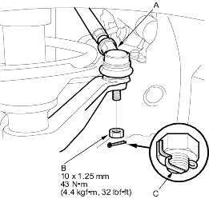
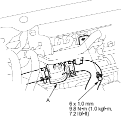
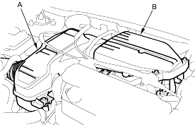
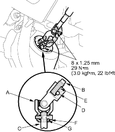

- Wipe off any grease contamination from the ball joint tapered section and threads. Then reconnect the tie-rod end (A) to the damper steering arms. Install the 10 mm nut (B) and tighten it.

- Install the new cotter pin (C), and bend it as shown.
- Reinstall the heater valve (A) in its original position, and connect the heater valve cable to the valve arm. Install the heater hoses on the hose clamps securely.

- Install the air cleaner (A) and resonator (B).

- Install the steering joint (A), and reconnect the steering shaft (B) and pinion shaft (C). Make sure the steering joint is connected as follows:
- Insert the upper end of the steering joint onto the steering shaft (line up the bolt hole (D) with the flat portion (E) on the shaft).
- Slip the lower end of the steering joint onto the pinion shaft (line up the bolt hole (F) with the groove (G) around the shaft), and loosely install the lower joint bolt. Be sure that the lower joint bolt is securely in the groove in the pinion shaft.
- Pull on the steering joint to make sure that the steering joint is fully seated. Then install the upper joint bolt and tighten it.

- Install the driver's dashboard lower covers.
- Centre the cable reel by first rotating it clockwise until it stops. Then rotate it counter-clockwise (about 2 and half turns) until the arrow mark on the label points straight up. Reinstall the steering wheel (see page 17-8).